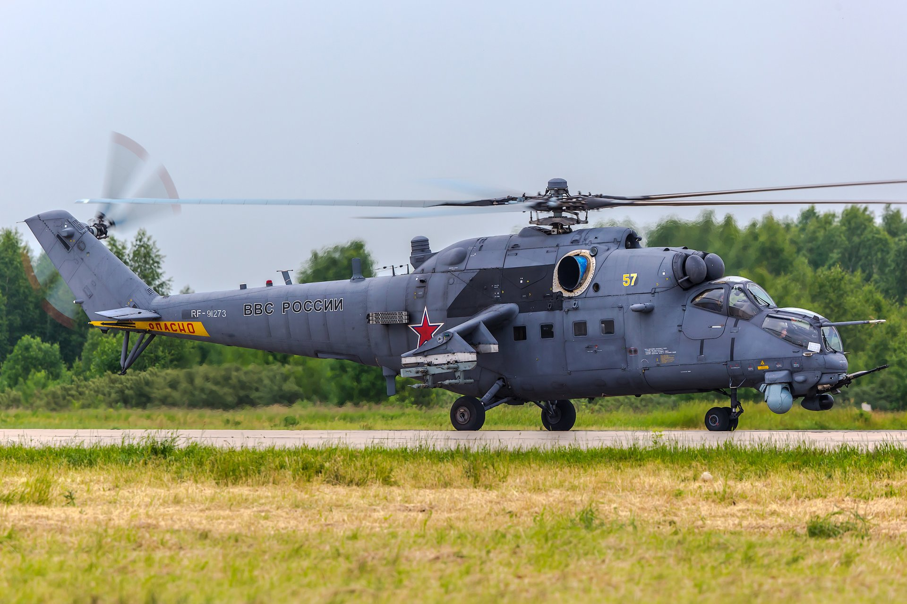
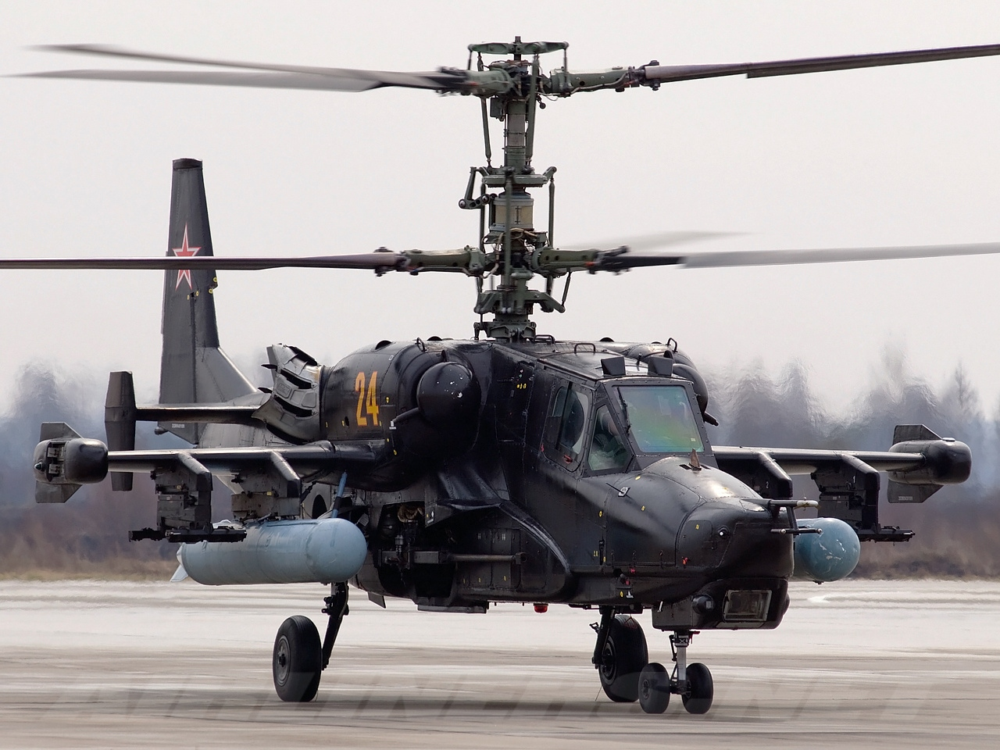
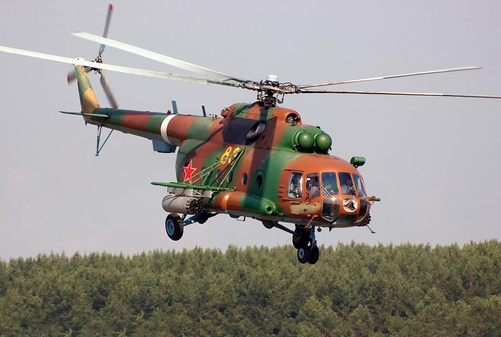

Винтокрылый летательный аппарат вертикального взлёта и посадки, у которого подъёмная и движущая (пропульсивная) силы на всех этапах полёта создаются одним или несколькими несущими винтами с приводом от одного или нескольких двигателей.
Первым советским вертолётом, оснащённым ПТУР, в 1962 году стал Ми-1МУ, вооружённый четырьмя ПТУР 3М11 «Фаланга». Из-за отсутствия интереса к нему у Вооружённых сил СССР он не был принят на вооружение, как и его усовершенствованная версия с шестью ракетами. Не получили существенного развития в качестве носителей ПТУР и вертолёты следующего поколения – Ми-2 и Ми-4. Первым действительно боевым вертолётом СССР стал созданный в 1972 году боевой вертолёт Ми-24. В первую очередь он был оптимизирован не для противотанкового применения, а для огневой поддержки наземных войск, хотя и мог нести до четырёх ПТУР «Фаланга», а в дальнейшем и более совершенных ПТУР «Штурм-В». Конструкция Ми-24 и его модификаций не была оптимизирована для ведения боевых действий из режима висения, характерного для вертолётов стран НАТО. По сути Ми-24 применялся как штурмовик с коротким взлётом и вертикальной посадкой или как воздушная БМП. Из-за наличия вместительного десантного отсека Ми-24 получился существенно более крупным и тяжёлым, по сравнению с американским AH-1, впрочем, эти вертолёты изначально создавались для решения разных задач. В последних модификациях Ми-24ВМ (Ми-35М) вертолёт получил укороченные крылья, двигатели увеличенной мощности и 8-16 ПТУР «Штурм-В» или «Атака-М», что позволяет ему относительно эффективно решать задачи по уничтожению бронетехники.
| Название | Скорость | Класс | Вес | Дальность полёта | |
|---|---|---|---|---|---|
| Ми-24ВМ | 300 км/ч | транспортно-боевой вертолёт | 8360 кг | 550 км |  |
| Ка-50 | 350 км/ч | одноместный ударный вертолёт | 9800 кг | 450 км |  |
| Ми-8 | 250 км/ч | средний многоцелевой вертолёт | 5726 кг | 425 км |  |